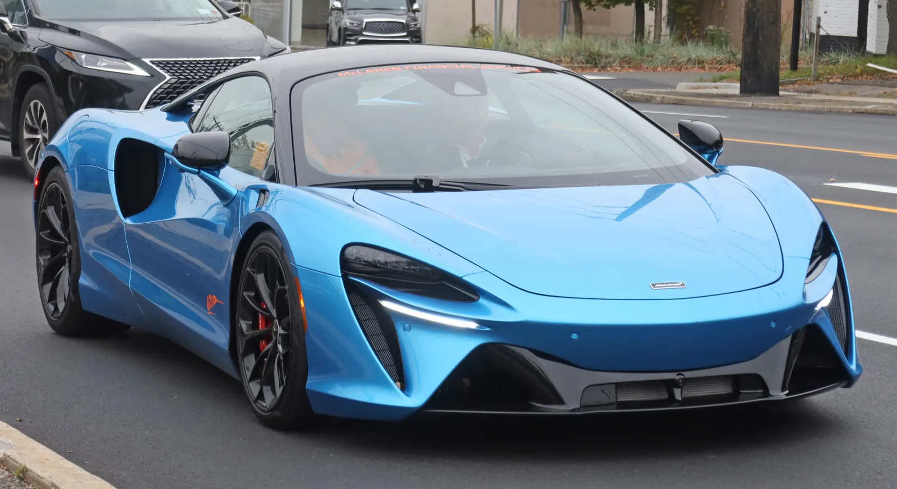
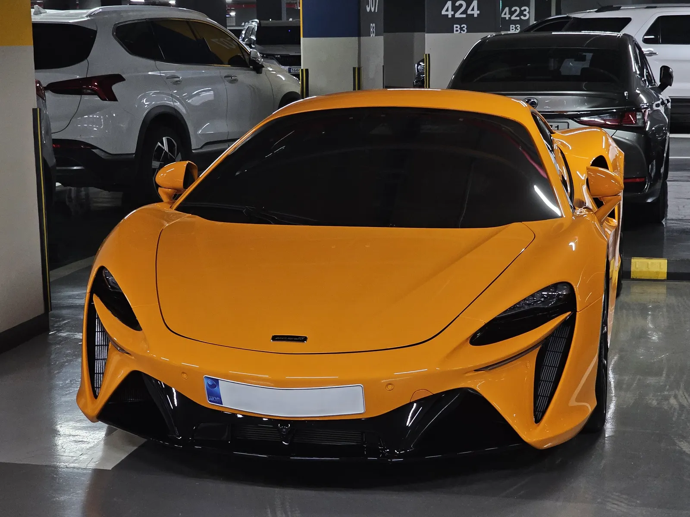
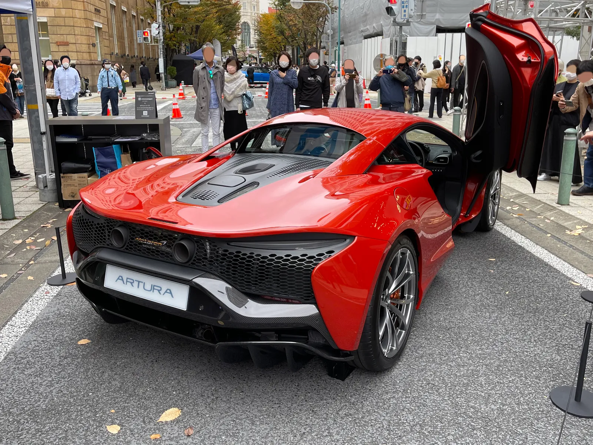
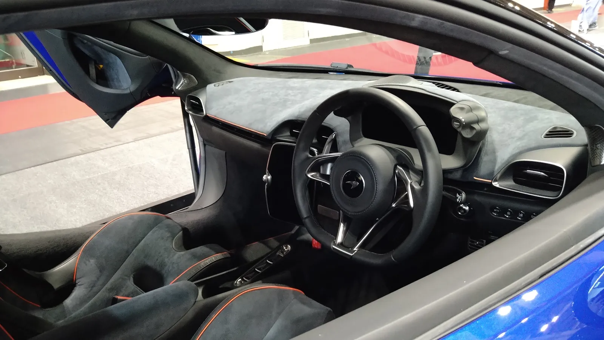

▲ 맥라렌의 현행 하이브리드 슈퍼카 아투라. 이번에 예고된 신형 하이브리드 쿠페는 아투라보다 차체가 길고 출력이 높다 ⓒ Wikimedia Commons
슈퍼카 브랜드가 갑자기 '부티크'를 말하기 시작했다.
맥라렌이 최근 며칠 새 두 가지 큰 발표를 연달아 내놨다. 하나는 전시장을 시계·명품 매장처럼 바꾸는 쇼룸 리디자인과 새 기업 아이덴티티, 그리고 810마력급 신형 하이브리드 쿠페 예고. 다른 하나는 영국에 5억 파운드(약 9,200억 원)를 투입해 사상 처음으로 자체 엔진을 만들고, 퍼포먼스 SUV까지 내놓겠다는 투자 계획이다. 겉보기엔 별개 소식 같지만, 둘 다 맥라렌이 브랜드 자체를 다시 짜는 흐름 위에 있다.
1. 전시장이 시계 매장처럼 바뀐다
맥라렌은 전 세계 딜러사에 '럭셔리 부티크' 콘셉트의 새 매장 디자인을 공개했다. 시계·패션 브랜드 매장에서 흔히 보는 중앙 카운터 배치, 섬처럼 독립된 전시 공간, 프라이빗 상담 라운지를 도입한다. 소재는 원목 마감과 어스톤(흙빛) 컬러, 따뜻한 조명을 기본으로 하되, 맥라렌 고유의 파파야 오렌지를 포인트 컬러로 살렸다.
동시에 브랜드 아이덴티티(로고·서체·그래픽 시스템)도 새로 정리했다. 맥라렌 측은 이번 개편이 창업자 브루스 맥라렌(Bruce McLaren)의 레이싱 헤리티지를 더 전면에 내세우는 방향이라고 설명했다. 새 매장 콘셉트는 신형 하이브리드 쿠페 출시에 맞춰 글로벌 딜러망에 순차 적용될 예정이다.

▲ 맥라렌의 상징색 파파야 오렌지. 새 매장 콘셉트에도 포인트 컬러로 반영됐다 ⓒ Wikimedia Commons
2. 810마력 하이브리드 쿠페, 코드명 'P34'
새 매장과 함께 예고된 것이 신형 하이브리드 쿠페다. 개발 코드명은 P34. 미드십 배치의 V6 트윈터보 엔진에 전기모터를 결합해 합산 출력 약 810마력, 토크 약 1,080Nm을 낼 것으로 알려졌다. 차체는 현재 라인업의 아투라(Artura)보다 길고, 맥라렌 F1을 연상시키는 쐐기형 전면 디자인과 강화유리 후드가 특징으로 거론된다.
| 항목 | 내용 |
|---|---|
| 파워트레인 | 미드십 V6 트윈터보 + 전기모터(하이브리드) |
| 합산 출력 | 약 810마력 |
| 합산 토크 | 약 1,080Nm |
| 차체 | 아투라 대비 전장 확대, F1 모티프 쐐기형 전면부 |
| 예상 판매가 | 약 29만 유로(원화 환산 약 4억 원대) 수준으로 거론 |
| 첫해 생산 목표 | 약 1,000대 |
✅ 아직 확정 안 된 부분
· 정식 차명은 미공개, 코드명 P34로만 알려짐
· 출시 시점은 2027년 전후로 거론되나 맥라렌의 공식 확정 발표는 아직 없음
· 가격·생산량은 업계 보도 기준 추정치
3. 5억 파운드 영국 투자 — 왜 지금 엔진을 자체 개발하나
맥라렌은 별도로 영국 내 생산·연구시설에 5억 파운드(약 9,200억 원)를 투자한다고 밝혔다. 이 투자는 워킹의 맥라렌 프로덕션 센터, 사우스요크셔의 컴포지트 테크놀로지 센터, 비스터의 크리에이션 센터(디자인·혁신), 미들랜즈의 차량 시험·개발 시설의 운영 능력을 확대하는 데 쓰인다.
가장 눈에 띄는 대목은 맥라렌이 회사 역사상 처음으로 파워트레인(엔진·변속기)을 자체 설계·생산한다는 점이다. 이미 신규 엔진 2종과 변속기 개발에 착수했다. 그동안 맥라렌은 코스워스·리카르도 등 외부 업체의 엔진을 얹어왔는데, 이번 투자로 엔진 내재화 체제로 전환하는 셈이다.
📍 투자 규모와 일자리
이번 투자로 2032년까지 직·간접 일자리 최소 1,000개가 새로 생기고, 생산 인력은 현재의 약 2배로 늘어난다. 공급망까지 포함하면 추가로 최대 3,000개 일자리가 창출될 것으로 맥라렌은 전망했다. 맥라렌 로드카 사업은 2024년 바레인 국부펀드로부터 CYVN(L'IMAD)이 인수했으며, 이번 투자는 그 이후 나온 첫 대규모 영국 내 확장 계획이다.
4. 처음 나오는 맥라렌 SUV, 영국에서 만든다
이번 투자 발표에서 처음 공식 확인된 것이 '퍼포먼스 SUV'다. 페라리 푸로산게, 람보르기니 우루스와 경쟁할 이 모델은 신설 예정인 영국 내 차량 조립시설에서 생산되며, 앞서 언급한 자체 개발 하이브리드 파워트레인을 얹을 예정이다. 맥라렌이 SUV를 만들지 않겠다고 여러 차례 선을 그어온 만큼, 업계에서는 이번 확정을 두고 "10년 늦은 노선 변경"이라는 평가도 나온다.
맥라렌의 공식 발표는 뉴스룸에서 확인할 수 있다. 맥라렌 공식 뉴스룸 바로가기

▲ 맥라렌 특유의 버터플라이 도어. 신형 하이브리드 쿠페 역시 미드십 2도어 구성을 유지할 것으로 보인다 ⓒ Wikimedia Commons
5. 관전 포인트 — 두 발표가 같은 방향을 가리키는 이유
쇼룸 리디자인과 5억 파운드 투자는 별개 뉴스로 보이지만, 결국 하나의 전략으로 수렴한다. 초고가 한정 슈퍼카 중심이던 맥라렌이 하이브리드 쿠페·SUV로 라인업을 넓히면서, 동시에 판매 방식과 브랜드 이미지를 명품에 가깝게 재편하려는 것이다. 자체 엔진 개발은 이 확장을 뒷받침할 기술 기반이라는 점에서, 세 가지 소식 모두 결국 '브랜드 리포지셔닝'이라는 같은 문장으로 요약된다.

▲ 맥라렌 아투라의 실내. 새 매장 콘셉트가 강조하는 '고급스러운 디테일' 기조는 실내 소재 구성에서도 이미 나타나고 있다 ⓒ Wikimedia Commons
6. 요약
맥라렌이 '럭셔리 부티크' 콘셉트의 쇼룸 리디자인과 새 기업 아이덴티티, 코드명 P34의 810마력 하이브리드 쿠페를 공개했다. 새 쿠페는 미드십 V6 트윈터보 하이브리드로 아투라보다 차체가 크고 출력이 높은 것으로 알려졌다.
동시에 영국에 5억 파운드를 투자해 사상 처음으로 자체 엔진과 변속기를 개발하고, 신설 조립시설에서 퍼포먼스 SUV를 생산하겠다고 밝혔다. 이 투자로 2032년까지 최소 1,000개의 일자리가 새로 생길 전망이다.
매장·브랜드·라인업을 동시에 바꾸는 이번 행보는 한정 슈퍼카 브랜드에 머물지 않고 더 넓은 럭셔리 시장으로 확장하려는 맥라렌의 방향 전환으로 풀이된다.